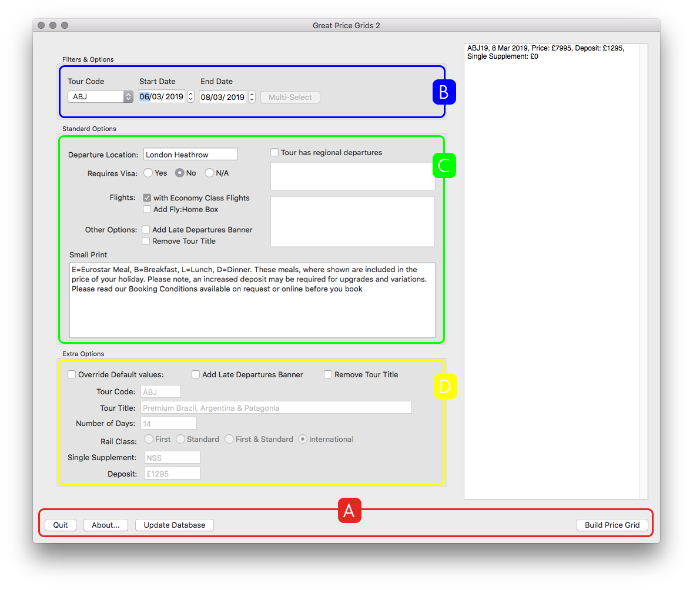

First Look
First Look
First Look
A first look at what you're working with
When you open up Price Grid Builder for the first time, you are presented with a relativly complex window full of controls. Below you will see a diagram with the main areas picked out; each of these sections are covered in more detail in later sections of this guide, so for now we'll just stick to an overview.

Section A (red) is for app-related items, it had buttons to update the app and to quit the app amongst others.
Section B (blue) is for selecting your tourcode and date range.
Section C (green) is for selecting standard options
Section D (Yellow) is for advanced options